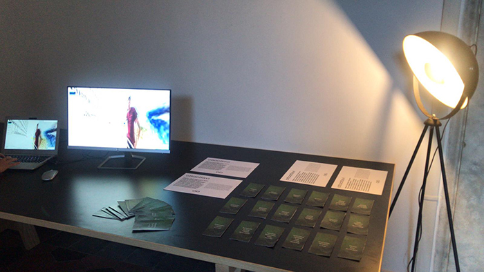
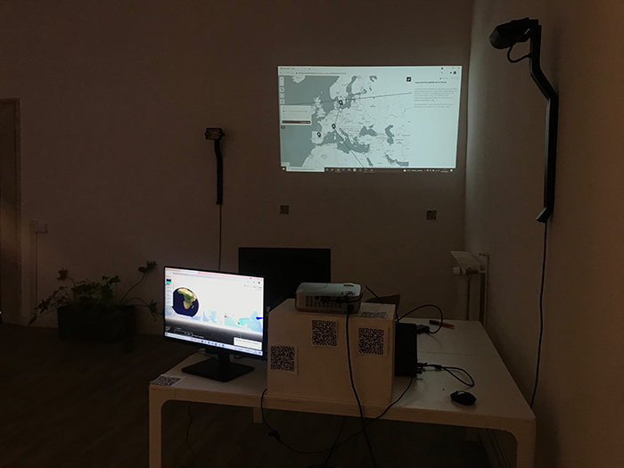
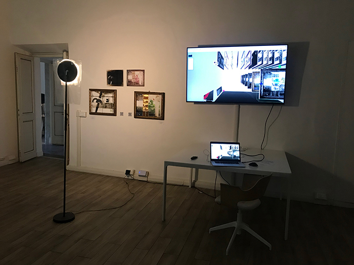
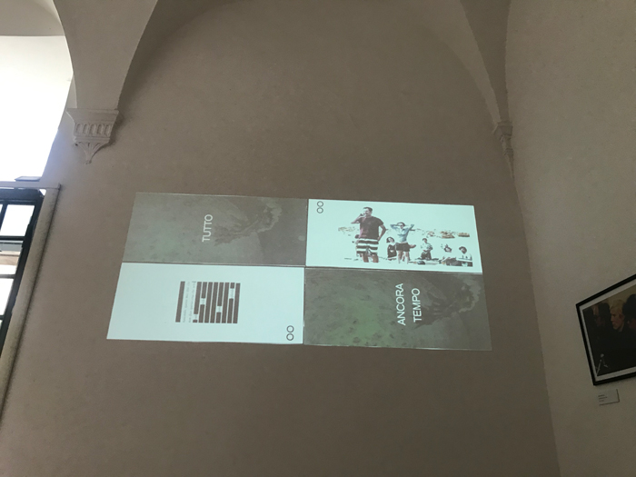
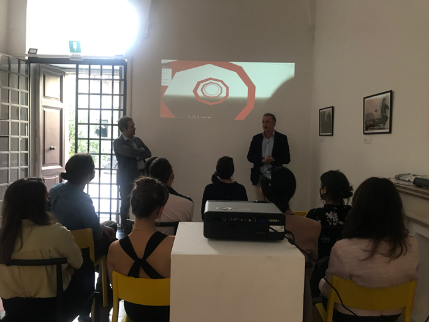

Al termine della Winter School i lavori saranno esposti presso EIIS Spazio Taverna a Palazzo Taverna e sulla piattaforma NewArt.City.
Guarda la mostra virtuale 2021 su NewArt.City.
Qui in basso alcune foto della mostra alla Spazio Taverna dell'edizione 2021.




